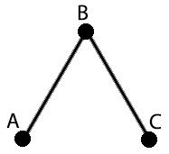

> Formada por dois conjuntos, um de arestas e um de vértices
## Vértice
Não passam de um ponto no espaço
___
## Aresta
Uma ligação entre dois vértices.
Pontes de Konigsberg
$$V=\{a, b, c, d, e\}$$
$$A=\{(a, b); (a, c); (a, d); (d, b); (d, c)\}$$
## Propriedades
### Grau
> Quantidade de arestas relacionadas a um vértice $V$
### Direção
> Arestas podem ser direcionadas, podendo ser navegadas em apenas uma direção.
### Peso
> Valor atribuído a vértices e/ou arestas em um grafo.
### Excentricidade
> A distância obtida entre um ponto central para algum outro.
### Centro
> O centro de um grafo é o conjunto formado pelos vértices de menor excentricidade.
### Raio
> O raio de um grafo é o menor valor de excentricidade para todo vértice V.
### Diâmetro
> O diâmetro de um grafo é o maior valor de excentricidade para todo vértice V.
### Mediana
> A mediana é a soma das distâncias entre os vértices e a comparação para chegar no menor valor.
## Representação
### Matriz de adjacência
> Mostra as conexões entre os vértices. A interseção entre linha e coluna indica uma aresta.
> Tem formato $n \times n$
$$\begin{bmatrix}
a_{1,1} & a_{1,2} & a_{1,3} & a_{1,4} & a_{1,5} \\
a_{2,1} & a_{2,2} & a_{2,3} & a_{2,4} & a_{2,5} \\
a_{3,1} & a_{3,2} & a_{3,3} & a_{3,4} & a_{3,5} \\
a_{4,1} & a_{4,2} & a_{4,3} & a_{4,4} & a_{4,5} \\
a_{5,1} & a_{5,2} & a_{5,3} & a_{5,4} & a_{5,5}
\end{bmatrix}$$
$$a_{i,j} =
\begin{cases}
0 & \quad \text{se não existe aresta} \\
1 & \quad \text{se existe aresta ou aponta de } i \text{ para } j \\
{-1} & \quad \text{se existe aresta e aponta de } j \text{ para } i \\
n & \quad \text{se existe aresta e tem peso } n
\end{cases}$$
$$
\begin{array}{r|lll}
~ & A & B & C & D & E \\
\hline
A & 0 & 1 & 1 & 0 & 0 \\
B & 1 & 0 & 0 & 1 & 0 \\
C & 1 & 0 & 0 & 1 & 0 \\
D & 0 & 1 & 1 & 0 & 0 \\
E & 0 & 0 & 0 & 0 & 0
\end{array}
$$
Simétrica no eixo da diagonal principal
$$
\begin{array}{r|lll}
~ & A & B & C & D & E \\
\hline
A & \boldsymbol{0} & 1 & 1 & 0 & 0 \\
B & 1 & \boldsymbol{0} & 0 & 1 & 0 \\
C & 1 & 0 & \boldsymbol{0} & 1 & 0 \\
D & 0 & 1 & 1 & \boldsymbol{0} & 0 \\
E & 0 & 0 & 0 & 0 & \boldsymbol{0}
\end{array}
$$
$$
\begin{array}{r|lll}
~ & A & B & C & D & E \\
\hline
A & \boldsymbol{0} & 1 & 1 & 0 & 0 \\
B & & \boldsymbol{0} & 0 & 1 & 0 \\
C & & & \boldsymbol{0} & 1 & 0 \\
D & & & & \boldsymbol{0} & 0 \\
E & & & & & \boldsymbol{0}
\end{array}
$$
$$
\begin{array}{r|lll}
~ & A & B & C & D & E \\
\hline
A & \boldsymbol{0} & & & & \\
B & 1 & \boldsymbol{0} & & & \\
C & 1 & 0 & \boldsymbol{0} & & \\
D & 0 & 1 & 1 & \boldsymbol{0} & \\
E & 0 & 0 & 0 & 0 & \boldsymbol{0}
\end{array}
$$
### Matriz de incidência
> Mostra as conexões de cada vértice. Linhas representam vértices e colunas, arestas.
> Tem formato $n \times m$
$$
\begin{array}{r|lll}
~ & a_{1} & a_{2} & a_{3} & a_{4} \\
\hline
A & 1 & 1 & 0 & 0 \\
B & 1 & 0 & 1 & 0 \\
C & 0 & 1 & 0 & 1 \\
D & 0 & 0 & 1 & 1 \\
E & 0 & 0 & 0 & 0
\end{array}
$$
$$
\begin{array}{r|lll}
~ & a_{1} & a_{2} & a_{3} & a_{4} \\
\hline
A & \boldsymbol{1} & 1 & 0 & 0 \\
B & 1 & \boldsymbol{0} & 1 & 0 \\
C & 0 & 1 & \boldsymbol{0} & 1 \\
D & 0 & 0 & 1 &\boldsymbol{1} \\
E & 0 & 0 & 0 & 0
\end{array}
$$
Só é simétrico se $n = m$
### Lista indexada
##### (ou lista de adjacência)
> Armazena todos os vértices adjacentes ao vértice atual.
$$
\begin{array}{|r|l|}
\hline
A & \to B \\
\hline
\end{array}
$$
$$
\begin{array}{r|lll}
A & \to B & \to C & \to \bullet \\
\hline
B & \to A & \to D & \to \bullet \\
\hline
C & \to A & \to D & \to \bullet \\
\hline
D & \to B & \to C & \to \bullet \\
\hline
E & \to \bullet
\end{array}
$$
## Classificações
Grafos Direcionais
Grafos Simples
Grafos Completo
Grafos Conexos
Grafos Ponderados
Um exemplo de matriz ponderada
$$
\begin{array}{r|cccccc}
~ & A & B & C & D & E & F \\
\hline
A & \boldsymbol{0} & 15 & 0 & 0 & 0 & 0 \\
B & 15 & \boldsymbol{0} & 7 & 0 & 10 & 0\\
C & 0 & 7 & \boldsymbol{0} & 12 & 0 & 0 \\
D & 0 & 0 & 12 & \boldsymbol{0} & 14 & 0 \\
E & 0 & 10 & 0 & 14 & \boldsymbol{0} & 13 \\
F & 0 & 0 & 0 & 0 & 13 & \boldsymbol{0}
\end{array}
$$
Subgrafos
Grafos Bipartidos Completos
Grafos Isomorfos

Grafos Homeomorfos
Grafos Eulerianos e Hamiltonianos
# Árvore
## Definições
Grafo conexo e sem ciclos
### Raiz
> Nó escolhido arbitrariamente
### Nível
> Número de nós que devem ser navegados para chegar da raiz a um vértice $V$
### Folha
> O conjunto de vértices sem filhos na árvore
## Representação
Matriz de Adjacência
$$
\begin{array}{r|cccccc}
~ & A & B & C & D & E & F \\
\hline
A & \boldsymbol{0} & 1 & 1 & 0 & 0 & 0 \\
B & -1 & \boldsymbol{0} & 0 & 1 & 0 & 0 \\
C & -1 & 0 & \boldsymbol{0} & 0 & 1 & 1 \\
D & 0 & -1 & 0 & \boldsymbol{0} & 0 & 0 \\
E & 0 & 0 & -1 & 0 & \boldsymbol{0} & 0 \\
F & 0 & 0 & -1 & 0 & 0 & \boldsymbol{0}
\end{array}
$$
$$
\begin{array}{r|lll}
A & \to B & \to C & \to \bullet \\
\hline
B & \to D & \to \bullet \\
\hline
C & \to E & \to \bullet \\
\hline
D & \to \bullet \\
\hline
E & \to \bullet \\
\hline
F & \to \bullet \\
\end{array}
$$
Lista Indexada 2
$$
\begin{array}{rrrr}
A & \to B & \to D & \to \bullet \\
\downarrow & & & \\
C & \to E & \to \bullet \\
& \downarrow \\
& F & \to \bullet
\end{array}
$$
## Classificações
## Árvore Binária
> Árvore que pode ter apenas de 0 a 2 filhos.
## Floresta
> Grafo composto de árvores desconexas.
# Aplicações
## Sistemas de recomendação
- Facebook;
- Lojas online.
## Chamadas de uma função recursiva!